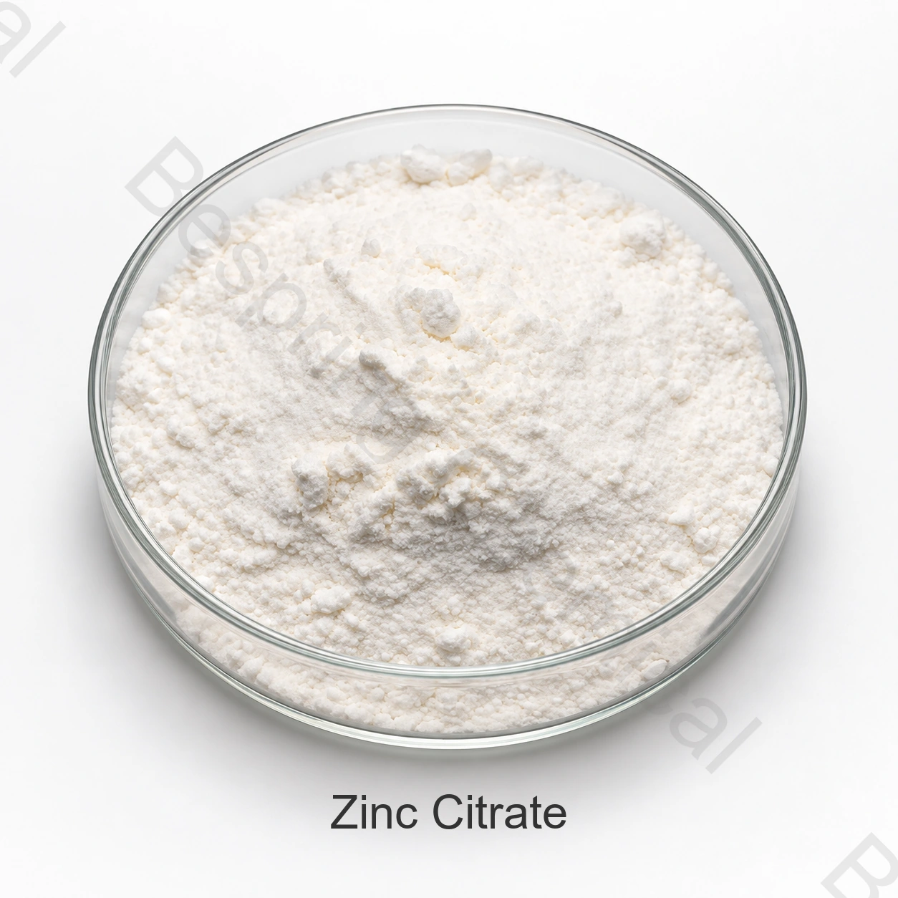

Nutrition supplements
Used as a zinc source after dosage and regulatory review.
Food grade ingredient · Citrate salt
Zinc citrate is a zinc salt of citric acid used in suitable nutrition products and supplements as a zinc fortificant.

Product image · confirm grade and packaging when ordering
Product overview
Reference assay≥96.0%
Standard packing25 kg bag
Container loadingConfirm / 20' FCL
QualificationCOA and certificates on request
The commercial reference describes zinc citrate as dihydrate Zn3(C6H5O7)2·2H2O, CAS 5990-32-9, with reference content of at least 96.0% on a dry basis.
The commercial reference limits must be matched to the exact grade, intended food category and destination-market rules. A product name alone does not establish regulatory conformity.
Application screening
Confirm legal use, dosage, technical performance and sensory impact in the finished product.
Used as a zinc source after dosage and regulatory review.
Evaluate zinc contribution, taste and compatibility in qualifying foods.
Specify zinc basis, particle size, hydrate form and contaminant limits.
Assess flow, compression, blend uniformity and dissolution.
Evaluate dispersion, sediment and sensory effects.
Confirm actual zinc assay, certificate scope and destination-market permission.
Commercial specifications
These commercial reference limits are separate from batch COA results. Agree the grade, analytical basis and applicable standard before ordering.
Swipe or use the keyboard to read all columns
| Test item | Specification |
|---|---|
| Zinc citrate content, dry basis | ≥96.0% |
| Zinc | 31.0–34.0% |
| Loss on drying | ≤3.0% |
| Arsenic | ≤0.0003% |
| Lead | ≤0.001% |
| Cadmium | ≤0.0005% |
| pH value | 6.0–7.0 |
Specification note: Confirm whether the stated content and zinc limits are calculated on an as-is or dry basis and verify the hydrate form, test method and intended food-category permission.
Qualification support
Request the current specification/TDS, SDS, methods and representative or batch COA.
Verify applicable HACCP, Kosher, Halal and ISO documents for the exact product and site.
Review the NIH PubChem zinc citrate record for identity context.
Storage and handling
Buyer questions
Zinc citrate is a zinc salt of citric acid used in suitable nutrition products and supplements as a zinc fortificant. Validate legal use and performance for the exact food.
The commercial reference specification lists ≥96.0%. Confirm the signed specification and COA.
The reference packing is 25 kg per bag and the minimum order is 500 kg.
Request specification/TDS, SDS, COA and applicable food-quality certificates.
Provide application, grade or hydrate form, specification, quantity, destination and delivery date.
Related ingredients
Review identity, specification, applications and sourcing details for this related ingredient.
Review identity, specification, applications and sourcing details for this related ingredient.
Review identity, specification, applications and sourcing details for this related ingredient.
Specification-led sourcing
Share application, specification, quantity, packing, destination and required documents.
Tell us your grade and destination market so we can confirm which documents are available for your order.
An external reference is not a batch certificate or a Bespring product specification.